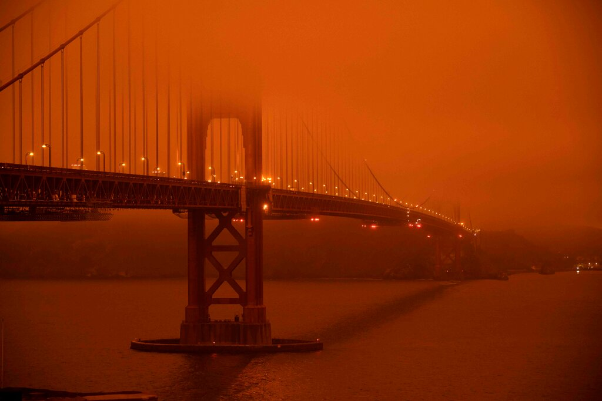

The pandemic and wildfires have underscored issues of housing and growth. Will the disruptions and dislocations force the state to chart a new course?
SAN FRANCISCO — Businesses shuttered by the pandemic are slowly reopening, but technology complexes are quiet, their workers carrying on from home indefinitely. The smoke-filled skies had started to clear, but new fires have arrived in a fierce wildfire season that shows the intensifying effects of climate change.
Now California and its $3 trillion economy are confronting a profound question: How much will go back to normal, and how much has been permanently changed?
This is still the home of 40 million people, Hollywood, Silicon Valley and the country’s largest farming industry and port complex. In August, amid the pandemic, Apple became a $2 trillion company, just two years after hitting $1 trillion.
For decades, California has operated under a trade-off: In exchange for high taxes and a high cost of living, its companies reap the rewards of an educated populace, an inviting lifestyle and a culture of innovation.
The events of 2020 have forced a closer look at the calculus. While the state is now recovering from the coronavirus, an assessment from the U.C.L.A. Anderson Forecast predicts it will be at least two years before the economy has fully recovered. Mirroring the national economy, office vacancies are rising, small businesses are teetering and temporary layoffs are being made permanent.
| Unlock more free articles. |
|---|
| Create an account or log in |
Superficially, the forecasts for California are no better or worse than the nation’s, with some sectors, like tourism, badly hurt and others, like technology, barely touched. But between climate change and remote work, the state is facing questions that uniquely cut to the core of its economic identity.
| Latest Updates: The Coronavirus Outbreak and the Economy | |
|---|---|
| 9m ago | G.E. says it has received a warning from the S.E.C. for possible securities fraud. |
| 2h ago | Europe faces a slow recovery, with tourist spots hit hardest, a central banker warns. |
| 5h ago | Powell warns of prolonged economic pain without more aid. |
| More live coverage: Global |
In the case of the pandemic, companies may increasingly ask whether the high cost of California cities is worth it if their workers can work remotely with the same productivity. Some companies may choose to leave the state altogether. And the spate of wildfires has brought new scrutiny to the spread-out development patterns that have accommodated an expanding population — and pushed people to cheaper inland areas most exposed to fire.
“These have long been questions that have been in the back of people’s minds, but now there’s an actual drill,” said Ted Egan, chief economist for the City of San Francisco.
Companies have long moved sales and customer-service jobs to cheaper cities like Phoenix. But they have been more reluctant to do so in areas like software engineering and management, figuring that proximity to the talent, research universities and venture capital in the tech epicenter outweighed the higher cost of labor.
Even before the pandemic, there were indications that that was starting to shift. Silicon Valley companies were increasingly putting jobs in engineering hubs in cities like Austin, Texas, and Toronto. Now they have an opportunity to run a remote-working experiment on a scale that wouldn’t have otherwise been tried
Google and Facebook have said they will allow employees to work remotely until 2021. Stripe, a payments company, recently announced that it would pay employees $20,000 to leave the Bay Area if they accepted a salary reduction of up to 10 percent based on the cost of living wherever they went. Citing a shift toward more employees working from home, Pinterest, which allows people to save images to virtual pinboards, paid $90 million to cancel a lease for 500,000 square feet in an unbuilt office building in San Francisco.
Nobody knows how efficient large-scale remote work will be over time, or if such arrangements will be attractive once people feel safe on public transportation and urban amenities like bars and restaurants have reopened. But if workers untethered from their offices flee the state, or companies start basing more high-paid workers elsewhere, it will have huge ramifications for California’s outlook. The past decade of economic expansion was heavily indebted to the boom in technology, and the state’s budget, with its highly progressive tax structure, is unusually dependent on wealthier residents.
Despite the diversity of California’s vast economy, there is near-universal agreement on one barrier to growth: the exorbitant cost of housing. The median price for single-family homes and condos in the state is closing in on $600,000, according to the real estate site Zillow, more than twice the national level. The figure reflects a longstanding shortage that has also caused rising rents, crowded households and two-hour commutes used to offset the cost of living. Much more than taxes, the reason that companies move jobs out of the state is lower-priced housing and the lower labor costs that go with it.
When you think of any economy in the long run, you need young, aggressive thoughtful folks who see an opportunity to build a life,” said Christopher Thornberg, founding partner of Beacon Economics, a consulting firm in Los Angeles. “And if you continue to squelch young population growth with bad housing policy, those folks may well turn somewhere else.”
Economists and planners have long counseled that the best way to relieve this pressure is to build more housing near the coastal job centers, but California has continued to sprawl, a pattern that has undermined the state’s own emission-reduction goals by encouraging longer commutes, while placing more homes in fire zones. In 2010, the last year with available data, nearly a third of California housing was in the so-called wildland-urban interface, where wildfire risk is greatest, according to the U.S. Forest Service.
“Climate change is here — this is not some far-off theoretical thing — and we build houses over a multi-decade time frame in which they are going to be standing in these areas well into the time when the impact on the climate will be much more severe,” said Kate Gordon, senior adviser to Gov. Gavin Newsom on climate and director of the Governor’s Office of Planning and Research.
“So there’s no question we have to think differently about how we grow in the future, with a focus on compact development in previously built-out areas and not taking over undeveloped land,” she added.
This would seem like an easy enough mandate. After all, California has invested heavily in renewable energy, was the first state to mandate solar power in new homes, and is run by a governor who has spoken of a “a climate damn emergency” and recently signed an executive order banning sales of new gas-powered cars in 15 years.
Yet there is ample indication that the politics of living with climate change are even more fraught than the politics of trying to prevent it. See, for instance, the debate over insurance rates in wildfire areas: California is trying to keep rates low in fire-prone areas, something voters want, even though many experts say states should let insurance rates rise in the long run to dissuade building in flood- and fire-prone areas that are increasingly vulnerable.
Or look at the state’s long-running debate over housing. Going back to 2017, the Legislature has begun each of the past few years with a flurry of bills intended to curb local zoning regulations and increase density by steering growth to existing areas — in other words, the same measures that climate experts say are crucial to tamp down wildfire risk. But despite a Democratic supermajority, the most ambitious bills have been undone by a strange-bedfellows coalition of tenant advocates worried about gentrification and suburban voters fearing neighborhood change.
“When it comes to making the massive changes necessary to adapt to warming temperatures, it’s really California against itself, and we’re going to need to make some major reforms if we want to survive this period,” said Micah Weinberg, chief executive of California Forward, a nonprofit group pushing to shape the state’s economic and government agenda.
Having a prosperous and growing economy ultimately means finding new ways to add jobs and homes. So California’s looming battles over climate change promise to be another round in a debate that predates statehood, which is how many people it really wants, and how much water will be required to sustain them.
In a season of perpetual fires and apocalyptic orange skies, and with home prices only continuing to rise, it seems open to question whether the state can get much bigger. But even in the age of climate change, some economists project that growth will find a way.
In a 2006 book, Robert Mendelsohn, an economics professor at Yale who focuses on the impact of climate change, sketched a surprisingly rosy picture of what the California economy might look like in 2100, assuming global temperatures rise 1.4 to 3.3 degrees Celsius. The state has 92 million residents. They live with less water, more heat waves and more forest fires. Still, somehow, there is a thriving economy.
There are small changes, like Northern California yards that in place of lush vegetation are decorated with rock lawns like those in Phoenix. There are bigger changes, like neighborhoods of fourplexes replacing single-family homes. Dr. Mendelsohn is aware that his vision of denser development probably sounds like hell to many Californians.
It even sounds a bit like hell to him, a professor who is nearing 70 and lives in a single-family home in Connecticut. “It might be hard for me to make that adjustment,” he said, “but that doesn’t mean a future generation couldn’t see something different.”
A world that is warmer, drier and more crowded may not be the world they asked for, but they’ll still be looking for jobs, while coping with the world as it is.